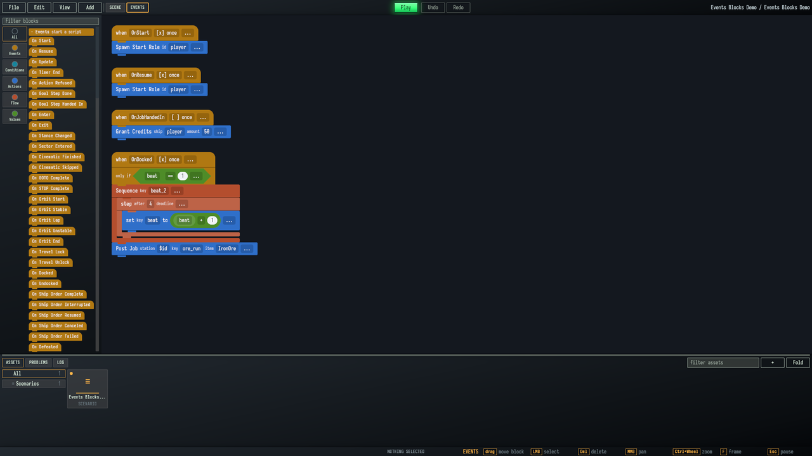
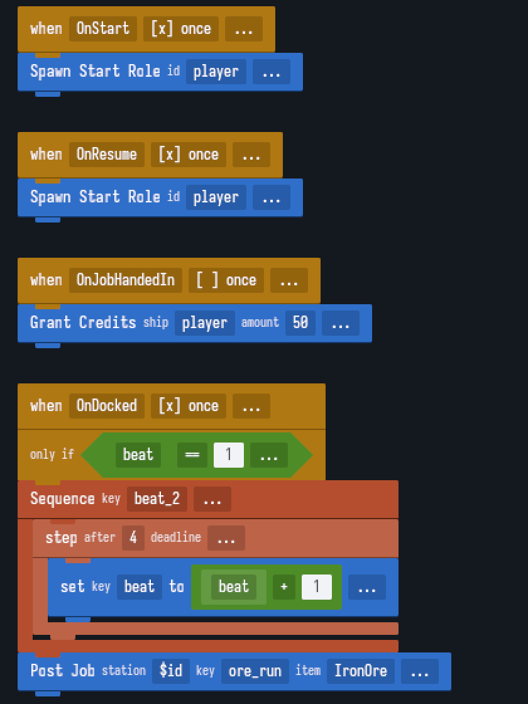
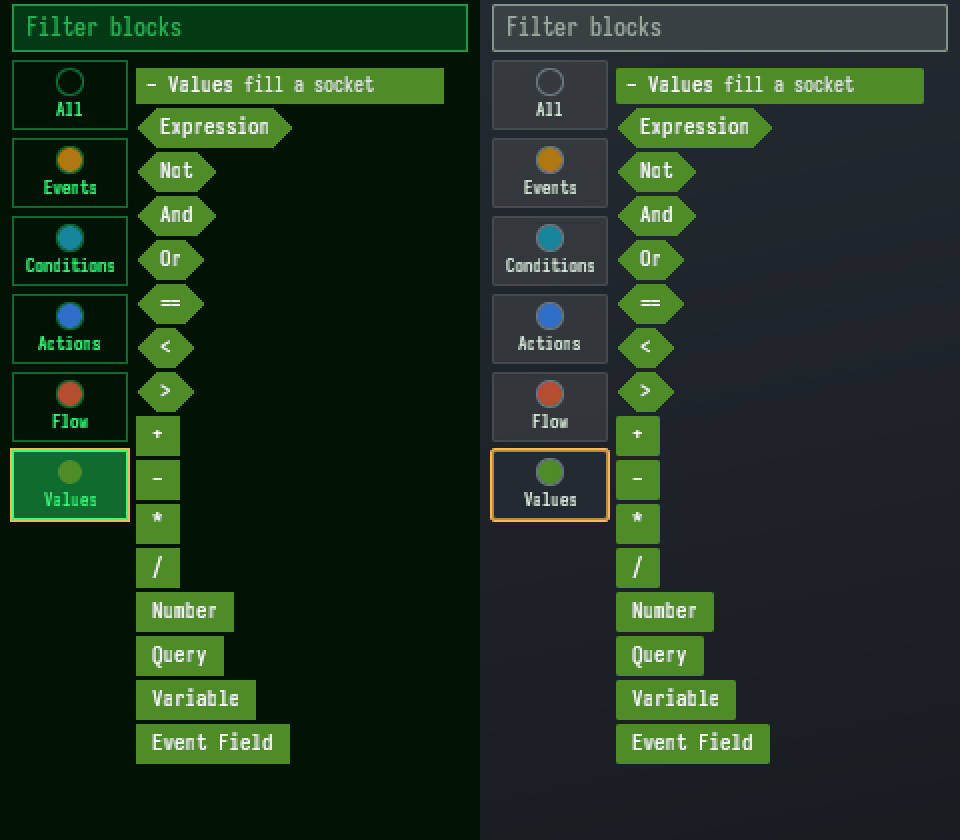
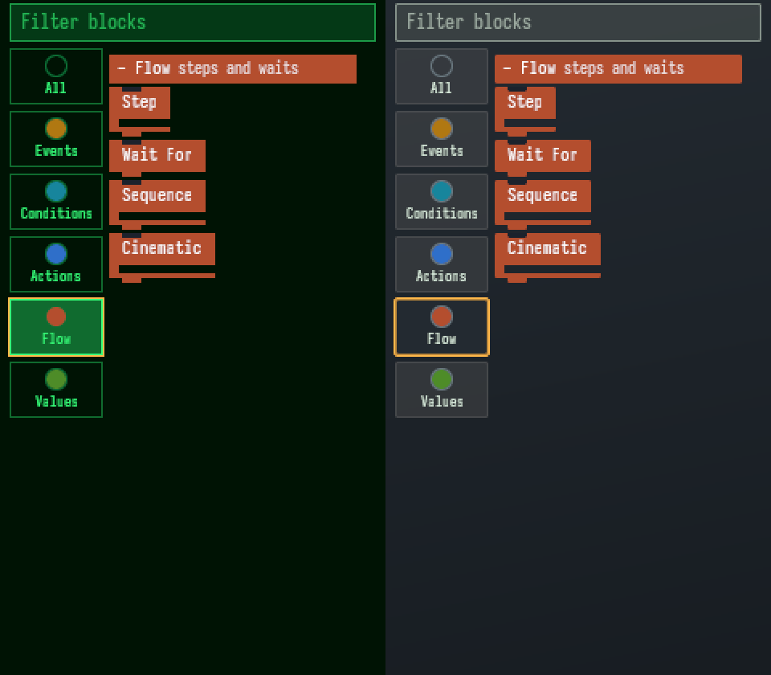
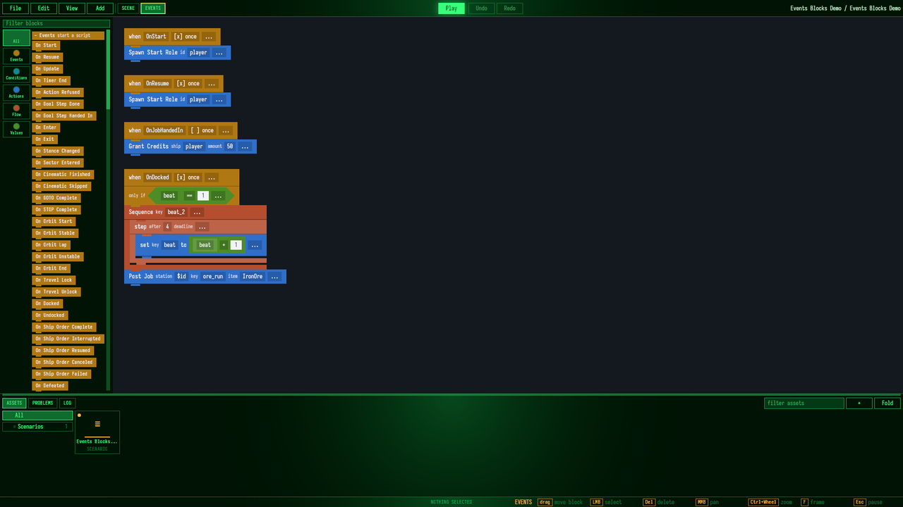
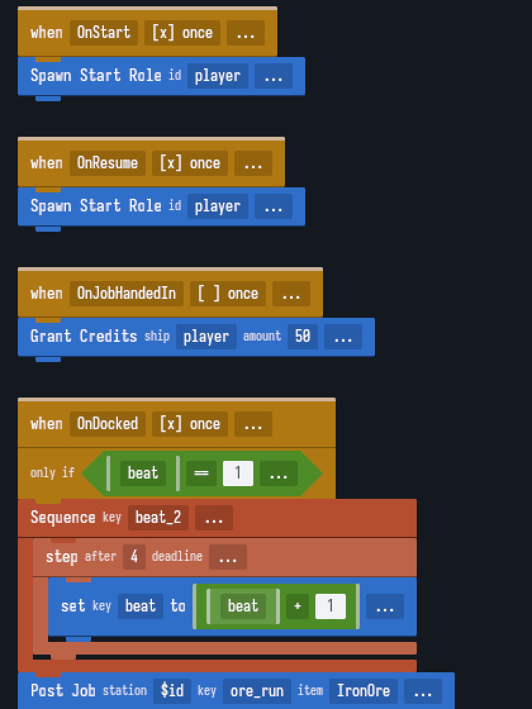

Event block corners
Task 20261122-122248, proposal 2026-11-22. Owner chose A; built 2026-11-22 (After, below).
Before: both themes
Real frames, 1920x1080, lavapipe on Xvfb, sandboxed profile. Four handlers:
hats, action stack blocks, a boolean filter, a Sequence C-block with a step,
and a + reporter. The canvas area is pixel-identical on both
themes (ImageMagick AE = 0): blocks use fixed colours and literal corners.

After: option A built
Same walk, same temporary capture patch, sandboxed profile. One run takes the phosphor frame, then switches the theme live to hardware and shoots again, then opens the Values and Flow palette groups and switches back and forth. Every block box takes the theme corner: square on phosphor, 2 px on hardware. The hat top and the reporter ends lost their own round shape. The fault badge and the rail dots stay round. The canvas crop now differs between themes at the block corners only (AE 23 px, before 0); phosphor before to after differs by 362 px (hat tops, reporter ends, chips).




What the corner tells today
| Block | Corner today | Also told by | Corner needed? |
|---|---|---|---|
| Hat (Event) | 14 px top | amber, when, no notch on top, taller pad | no |
| Stack (Action) | 3 px | blue, notch on top, tab below | no |
| C-block (Flow) | 3 px foot, square head | rust, left bar, foot | no |
| Boolean (Condition, comparison) | none | pointed ends (rotated squares, not a corner) | no |
| Reporter (Value) | round ends (height / 2) | green fill, no points | weak: the only cue vs a boolean is "no points" |
| Literal chip | 10 px pill | white fill, dark text | no |
Field chip, ... | 4 px | dark fill | no |
Options
Mocks are real frames of a temporary patch (reverted, diff empty). Option C has no mock of its own: it is A on phosphor and "Before" on hardware.
A. Corners follow the theme; type stays on colour and silhouette (recommended)
Every block box takes the theme corner: 0 on phosphor, 2 px on hardware. The notch, tab, C-bar and boolean points stay. Dots (fault badge, palette rail dot) stay round.
B. A plus a type cap
A, and a lighter 3 px band on the hat top and 3 px lighter end bars on a reporter. Adds paint and nodes for a cue that colour already gives. The reporter bars read as brackets.

C. Type shapes on hardware only
Phosphor square (as A). Hardware keeps the 14 px hat and the round reporter and literal. Breaks "hardware 2 px everywhere" and needs a per-theme shape branch the theme does not own.
Recommendation: A
- End state. No radius literal on the canvas or palette. Block type reads from colour,
the
whenword and the silhouette pieces. - How. Paint reads
theme.metric(UiMetric::Radius)once per pass (partial corners: hat head top-only, C-foot three corners, tabs bottom-only;ThemedRadiuswrites all four corners only).sync_canvasalso marks the board stale on anActiveUiThemechange. Palette entries do the same. Nonova_uichange. - What dies.
RADIUS,HAT_RADIUS,ENTRY_HAT_RADIUS, the 10/4 px chip radii, the reporter pill, the 3 px palette heading corner. - What may break. No test or walk asserts a canvas radius. The drop and select
Outlinefollows the node corner, so it goes square on phosphor. Docs:docs/scenario-system.md:25-26says "a value a round reporter". The v0.18.0 news still is history and stays. - Size. About 40 lines in
paint.rs,palette.rs,canvas/mod.rs; one doc line; one changelog entry.
Radius sites
| Site | Value | Shapes |
|---|---|---|
ui/canvas/paint.rs:42 | RADIUS 3 | stack block, C-foot, head bottom |
ui/canvas/paint.rs:44 | HAT_RADIUS 14 | hat top |
ui/canvas/paint.rs:179,191 | 10 / 4 | literal chip / field chip |
ui/canvas/paint.rs:256 | 4 | ... chip |
ui/canvas/paint.rs:321 | 10 | literal socket holder (drop outline) |
ui/canvas/paint.rs:386 | 8 (16 px) | fault badge: a dot, stays round |
ui/canvas/paint.rs:415 | height / 2 | reporter pill |
ui/canvas/paint.rs:557-562 | top 14 or 3, bottom 3 or 0 | block head |
ui/canvas/paint.rs:577, 655 | bottom 2 | notch, tab |
ui/canvas/paint.rs:619-624 | 3 on three corners | C-block foot |
ui/canvas/palette.rs:52, 201-206 | 9 top / 2 bottom | hat entry |
ui/canvas/palette.rs:168, 259 | bottom 2 | entry tab, chain foot |
ui/canvas/palette.rs:216, 239 | 2 / top 2 | stack, chain entry |
ui/canvas/palette.rs:287 | ENTRY_H / 2 | reporter entry |
ui/canvas/palette.rs:308 | RAIL_DOT / 2 | rail dot: stays round |
ui/canvas/palette.rs:447 | 3 | group heading |
ui/picker.rs:375, ui/assets.rs:1273 | ring, dot | outside the canvas, round by nature, out of scope |
All paths under crates/nova_editor/src/. Theme owner:
nova_ui/src/widget/chrome.rs:210 (ThemedRadius), reconciled at
chrome.rs:233; metrics in nova_ui/src/theme/config.rs:88-92; rule in
docs/architecture.md:214-220.
Seen, not in scope: the canvas colours ignore the theme too (fixed
block_colour and BLOCK_* in crates/nova_editor/src/palette.rs:46-93).